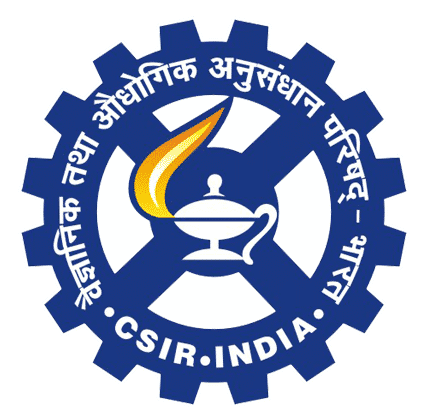
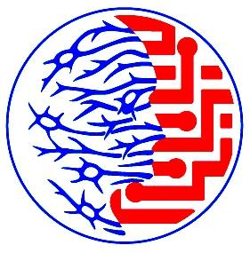
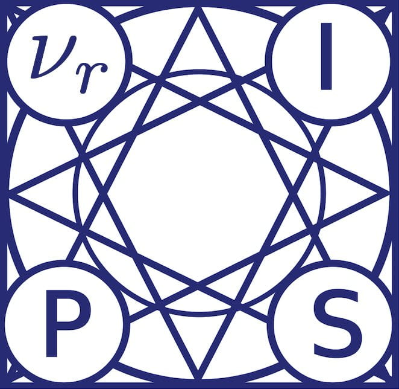
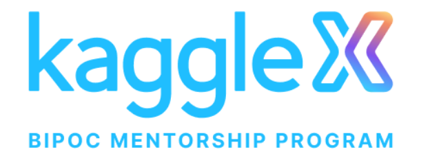
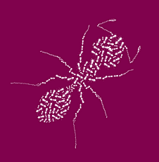
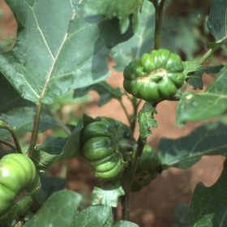
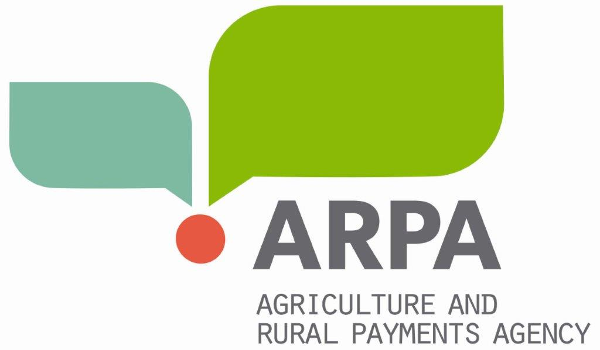
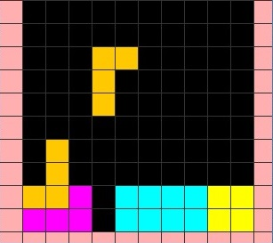
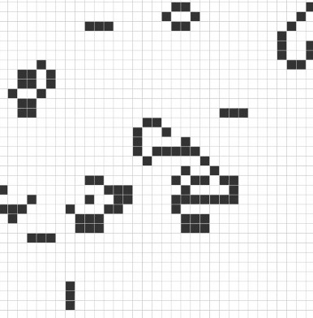
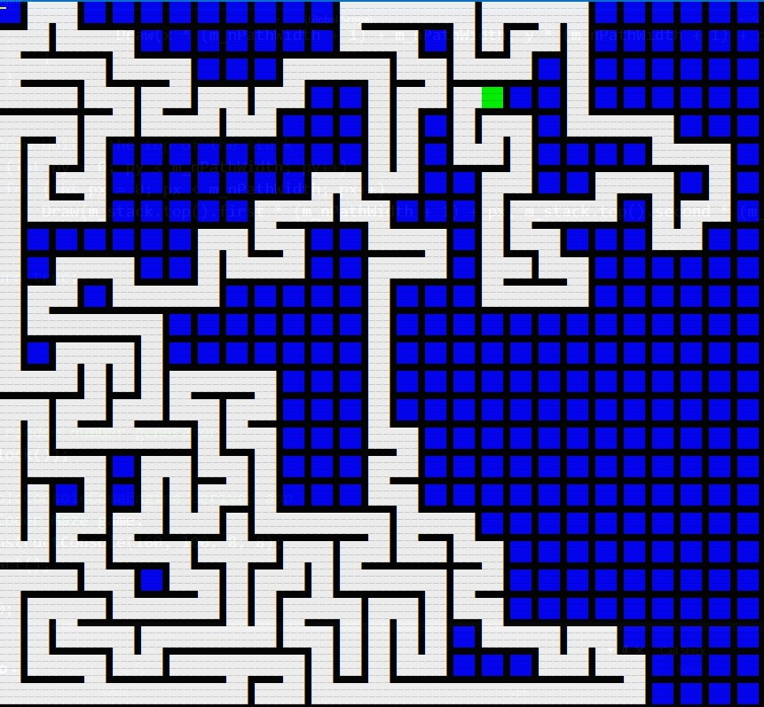

About
Tashin Ahmed (তাশীন আহমেদ in Bangla/বাংলা & アハメド・タシン in Japanese/日本語) is a researcher & engineer specializing in systems-based AI, with expertise spanning Neural Network Architectures across diverse domains such as Computer Vision, Natural Language Understanding, Sequential Learning in AI. His focus lies in fundamental R&D, aiming to bridge data processing with terminal solutions while contributing to the development of True and Safe AGI.
Previously, he worked as an AI Research Engineer at Smart Studios Malta and as a Data Scientist at AriSaf Tech Japan K.K. He served as a Research Assistant in the Dept. of CSE, United International University, funded by the ICT Ministry of Bangladesh under the ICT Innovation Fund. Additionally, he contributed as a Research Volunteer at the Collaborative Robotics Lab – University of Virginia, and completed an internship at CSIR – Central Drug Research Institute, Uttar Pradesh, India.
He began his career with a sampling period, gaining experience across diverse institutions while exploring multiple domains to identify and refine his core interests. His long-term research interests aim to address challenges in AI system development and play a vital role in advancing the AGI revolution.
Classical Computer Vision, Vision Language Model, Orthophoto Analysis & Segmentation, Quantitative Analysis, Algorithmic Trading, High Frequency Trading, Optical Character Recognition (English, Bengali, Japanese), Medical Image Analysis, Board Game AI.
Neuro-Dynamic Programming, Cellular Automaton, Swarm (AI) Intelligence, Multimodal & Reincarnating RL, Meta Learning, Core Neural Network Architectures.
Experiences
Professional Experiences
For details visit LinkedIn.
Research Engineer (AI R&D) at Cross Compass
Joined as a research engineer in Advanced AI Technology Development Group under Digital Industry Business Unit at XC from Oct 2024. Applying AI R&D expertise to innovate and solve current challenges on robotic vision, activities, inspection for some of the top Asian manufacturing industries. Engineering internal platforms and tools and conducting strategic research initiatives.
AI Research Engineer at Smart Studios Malta
AutoScan: Damage detection system that detects dents from different parts of a car in a controlled environment.
- Developed a custom data labeling tool to streamline annotation workflows.
- Translated an existing C++ program into a Python DL-based solution for enhanced car part detection.
- Integrated IR sensor data with video frames, creating a rule-based system for precise panel detection.
- Built a program compatible with Nomnio's software and scanner, utilizing five camera angles and IR sensors.
- Enhanced the system's performance by upgrading the core architecture with SOTA AI.
Agriculture & Rural Payments Agency: Orthophoto analysis for agro based landcover detection on whole Malta map.
- Processed large GeoTIFF files (40GB each) for training SOTA AI models for landcover segmentation.
- Focused on identifying cultivable land, water bodies, and agricultural features.
- Utilized MS Azure AI platform to address challenges in multi-band dataset processing.
AirImpact: Above ground Biomass detection with AI.
- Conducted tree counting with DL from orthophotos (planetscope data).
- Prepared a PoC (AI end to end model architecture) for above-ground biomass (AGBM) detection.
hubble_s: Behavioral analysis with AI technology.
- Provided theoretical solution on AI architecture & support on building Behavioral OS.
Colleagues and advisors: Dr Leander Grech, Dr Jean Paul Ebejer.
Data Scientist at AriSaf Tech Japan K.K.
TradeX: Automated trader for stock, ForEx and Crypto (Internal Project).
- Participated in a FinTech moonshot project, utilizing the in-house AI solution, Core Engine.
- Designed a rule-based system that proved more profitable than the existing AI system.
- Collaborated with senior management in brainstorming sessions for product innovation.
Junior Software Engineer at AriSaf Tech Japan K.K.
Say Halal: Halal Packaged item detection and a super app for Muslims in Japan (Internal Project).
- Performed data analysis and preparation for ML models, specifically for Japanese OCR.
- Developed a rule-based string processing model for multi-class classification of NLP datasets.
- The rule-based model achieved significant improvements compared to traditional ML models.
Research Assistant at Dept. of Computer Science & Engineering, United International University
- Contributed to the govt. funded project – BWriterGuide, focusing on the advancement of the Bengali OCR system.
- Managed the deployment of essential modules, utilizing Heroku for seamless integration & scalability.
- A segment of this project was published with necessary adjustments.
Supervisor – Dr Chowdhury Mofizur Rahman. Co-Supervisor – Chowdhury Rafeed Rahman.

Remote ML Research Intern at CSIR-Central Drug Research Institute, UP, India
- Collaborated with Dr Sukant Khurana & his analytics team on Multiple Sclerosis under medical image analysis.
- Hypothesis investigation related to various lesion features, maximum length of coordinates, area, and perimeter.
- Analyzed the effects of major and minor axis lengths, eccentricity, convex area, and volume on EDSS scores.
Supervisor – Dr Sukant Khurana.
Volunteer Experiences
Senior Program Committee Member at The 23rd Conference on Artificial Life (ALIFE 2025)
Roles: Digital communications and social media engagements, website management, meta-reviewer, onsite volunteer.
Member of The Program Committee at The 40th Conference on Image and Vision Computing New Zealand
Member of The Program Committee (Reviewer) at ICLR 2025

Technical Program Committee Reviewer at IJCNN 2024

Student Volunteer at NeurIPS
Mostly lent my hands on bug hunting for neurips.cc website. Tested environments like Gather Town for virtual conferences.
Research Volunteer at Collaborative Robotics Lab (CRL) – University of Virginia
Worked with Md Mofijul Islam on a multimodal based action recognition learning model. Competed in Hateful Memes competition hosted by FB & DrivenData.
Content Tester & Community Leader at DeepLearning.AI
Tested resources (video lectures, codes, manuals) for unreleased courses.

KaggleX BIPOC Mentor (Cohort 3) – Kaggle
Peer Reviewer
for the following Journals, Conferences & Workshops
Publications
Published
It's Much Easier for Neural Networks to Learn Game of Life Dynamics with the Right Activation Function: Polynomial Kolmogorov-Arnold Networks
Collective Wisdom in Language Models: Harnessing LLM-Swarm for Agile Project Management
GraphKAN: Graph Kolmogorov Arnold Network for Small Molecule-Protein Interaction Predictions
Pipeline Enabling Zero-shot Classification for Bangla Handwritten Grapheme
Evaluating The Effectiveness of Capsule Neural Network in Toxic Comment Classification using Pre-trained BERT Embeddings
Dual phase convolutional neural network based system aimed at small rice grain dataset for disease identification
Referred at – Geographical Research Bulletin
Automatic Signboard Detection and Localization in Densely Populated Developing Cities
Classification and understanding of cloud structures via satellite images with EfficientUNet
Preprints + Ongoing Works + On Hold
- Automated Market Trend Forecasting and Order Placement: A Hybrid Approach integrating Multiple AI Systems
- Exploring Adaptive Memory Patterns in Reinforcement Learning Agents
Competitions
Best Performances
Google Research Football with Manchester City F.C.
Created memory patterns for different role sets (defence, offence, attack). Different RL methods tested for different roles. Highest skill point: μ=1169.9.
Halite by Two Sigma
Put different categories of bots correlated to Swarm Intelligence utilizing different NN techniques. Highest gain: μ=1085.5.

Multi Agent Behaviour Challenge – CVPR 2022 (Ant & Beetle Groups Video Data)
Behavioral representation learning from ants and beetles using video dataset. Worked with PyTorch SimCLR for Contrastive Learning of visual Representations.

CGIAR Crop Damage Classification Challenge
The "Eyes on the Ground" project – collaboration between ACRE Africa, KALRO, IFPRI, and the Lacuna Fund for Picture Based Insurance framework.
Projects
Research Projects
AutoScan AI Scanner
SOTA Object Detection and Tracking system to detect multiclass objects in controlled environment. Classical CV approach saves cost both in terms of money and time.

ARPA-Orthoseg
Orthophoto Analysis on big data for multiclass classification and segmentation for agro based project. Project for Agriculture and Rural Payment Agency of Malta.
Dhan Oushodhi
An AI-based mobile phone application (Android) for detecting different Rice Grain diseases in context of Bangladesh. Undergraduate Capstone Project.
BWriter Guide
A user-friendly Bangla writer web application. Funded by ICT Ministry, Bangladesh & part of ICT Innovation Fund.
Say Halal
AST's internal R&D project for a mobile app that uses Japanese OCR and a natural language-based classification system.
Games & Simulations (Academic Projects)

TETRIS
Single player Tetris game created in C++ & Java. 10 different levels depending on play time with addictive scoring system.

LIFE
Zero-player game for observing cellular automaton & evaluation. Recreation of Conway's Game of Life using C & OpenGL.

MAZE
A maze creator algorithm which creates random mazes using OLC Engine with GUI in C++, automated solver and game.
Certifications
MOOCs
DeepLearning.AI Tensorflow Developer: Professional Certificate
deeplearning.ai — Grade: 93.785%
Data-driven Astronomy
University of Sydney — Grade: 89%
Social Psychology (with Honors)
Wesleyan University — Grade: 92%
Others
Outstanding Reviewer
First Workshop on Bangla Language Processing (BLP) – EMNLP 2023